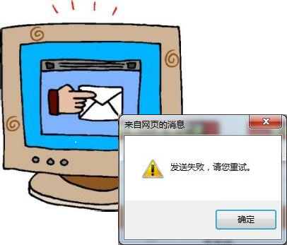

细数公司十大经典金句之首，当孰【你难道没收到我的邮件？】无疑（了吧~ 我发誓我木有统计过）——尤其是邮件作为我们公司主要的沟通手段之一，我对这句话可谓印象深刻了。
回想刚到公司的时候，我还不会打座机电话（我承认我真的去学了打电话…），当时跟工程同事唯一的沟通手段就是邮件，有时甚至把邮件当QQ用了。但毕竟邮件不是QQ，时效性略差。有时候一些问题得不到确认，于是事后问对方最多的就是你有没有收到我的邮件了。
通常情况下，我们大部分人都有一个认知误区：只要把邮件发给对方了，对方就一定会知晓并执行，于是自己的沟通任务就完成了。但事实是，对方很可能没有（及时）收到邮件，即使收到了邮件，也不代表能够理解、接受、甚至执行。

沟通并不仅仅是发送邮件那么简单——发送邮件不过是沟通手段的一种，切莫把沟通手段和沟通过程混淆了。
真正意义上的沟通，是指思想碰撞并传递的过程。只有我和你能够以相同的角度去看待某个问题、理解其细节，才能说我和你完成了沟通。否则即使你清楚明白地看到了（听到了）我的每字每句，但是你不理解我的意思，那我和你也没有做任何有实际意义的沟通。
邮件上的沟通，按我们通常的说法，充其量只是“存证式的沟通”。确实它可以作为沟通证据，但过于依赖邮件则可能造成沟通障碍——尤其是当邮件包含的信息量越大，其中的细节就越容易被忽略。
况且信息淹没只是沟通障碍的一种。文化背景、个人偏见等主观因素也会成为沟通障碍的帮凶。为了减少类似不必要的障碍，我现在工作的时候，更倾向于面对面的、或电话式的交流，同时我也会定期写一些文章，借此向身边的人表述我近期的观点或见闻——我觉得消除障碍最好的方法就是让别人可以更直接地了解自己。
我越来越觉得，当一个问题被过于依赖用邮件去处理时候，处理周期越长，它就像抛绣球似得被抛来抛去。多用面对面或电话式的沟通，则可以促使我们在当下通过讨论去解决、反思问题。而写文章则可以避免直面的尴尬，在特定的时期向其他人表述自己的观点。
实际上，我一直以来都有写文章的习惯，而且我有自己的Blog。但自从去年开始公司办了内刊，我就把本应发表去Blog的一部分文章改投放到公司内刊了。原因有二：一是可以令身边的人更了解我的想法，增强他人对自己的熟悉感会利于平时沟通；二是我更喜欢公司有个人可以帮我对文章把关，使我的文笔有所提升——我并不介意文章被挑剔，因为我始终相信：“谁越是对你的文笔斤斤计较，谁就越可能是决定你前途的人”。
但沟通不仅仅相互理解、消除障碍就足够了。沟通也是需要策略的，首要一条就是让对方可以听懂并接受的方式去表述，否则只会徒增对方的失落感、甚至乎反感。其次就是用可以吸引对方注意力的方式去表述——我相信相比起一本新书，遍布重点的参考书更有吸引力，尤其在考试前。
最后我需要声明的是，写下这篇文章，并不是说邮件沟通有什么不好。恰恰相反，邮件作为“存证式”的沟通手段，是其他沟通方式不能替代的。而之所以用邮件说明问题，不过是作为这篇劣文一个引子，我真正所倡导的，是灵活、有效的沟通过程——这才是我们需要的——我们大可以在完成沟通后，再用邮件来存证一下不是么？